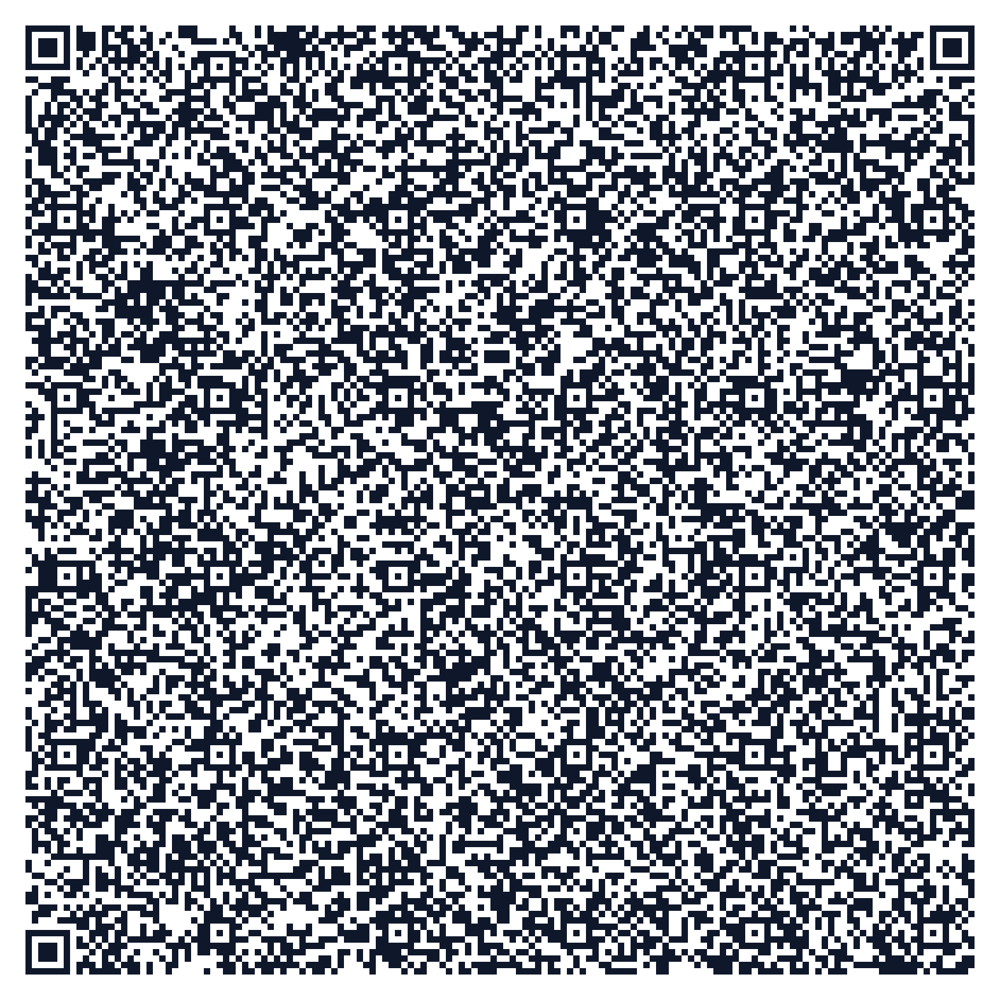

SMARTMINE Project Documentation QR Code
Scan either QR code with your smartphone camera to access the complete technical dossier, mathematical models, hardware specifications, and system architecture.
Scan for Web Portal
Opens the full interactive responsive documentation, charts, and API explorer directly on your mobile device.
{kind=link}
{kind=link}

Scan for Instant Text Dossier
Encodes the full engineering summary directly into the QR code. Reads in camera app with zero internet required!
{kind=link}
{kind=link}
Want to point the QR code to your custom public URL, ngrok tunnel, or cloud deployment? Type the URL below to regenerate instantly:
{kind=link}
Executive Summary
SMARTMINE is an integrated multi-sensor edge AI and wireless vehicle-to-vehicle (V2V) collision avoidance system developed for open-cast iron ore mining operations. Designed specifically to solve the severe visibility blinding caused by monsoon thermal inversions and winter morning fog, SMARTMINE safeguards heavy haul dumpers ($85\text{t}–120\text{t}$), excavators, light utility vehicles, and ground personnel.
Unlike conventional ADAS systems that rely exclusively on visual cameras or LiDAR (which fail completely in thick fog and dust), SMARTMINE utilizes a 77 GHz mmWave FMCW Radar and FLIR LWIR Thermal Infrared sensor fusion pipeline that pierces 100% opaque fog particulate layers while dynamically computing physical stopping distances based on real-time haul road wetness and slope gradients.
🎯 NMDC Statement #26007
Autonomous fog safety & mine vehicle collision avoidance for heavy industrial mining environments.
⚡ 5 Hz Live Telemetry
Real-time WebSockets streaming between simulated dumper fleet, edge processing nodes, and central control.
🔊 In-Cab Speech HUD
Voice synthesized situational warnings + 95dB directional audio alert when collision risk enters critical tier.
🛡️ Physics Risk Engine
Real-time calculation of reaction distance, wet unpaved road braking friction ($\mu_{\text{eff}}$), and Time-To-Collision (TTC).
Operational Fog Problem in Open-Cast Mining
In deep open-cast mines such as NMDC’s Bailadila, Kirandul, and Donimalai complexes, morning fog and monsoon inversions trap dense moisture and fugitive ore dust in the pit floor. Human drivers in high-cab dumpers suffer severe visual blinding:
| Operational Metric | Standard Clear Conditions | Severe Fog / Monsoon Blinding | Hazard Consequence |
|---|---|---|---|
| Visual Sight Line | 80 – 120 meters | 3 – 5 meters | Driver cannot see preceding vehicles or workers until impact. |
| Haul Truck Speed | 25 – 35 km/h | 15 – 25 km/h (reduced) | Even at 20 km/h, kinetic energy of 100t mass exceeds braking limits. |
| Stopping Distance (100t) | 12 – 16 meters | 18 – 26 meters | Stopping distance exceeds sight line by 400% to 600%! |
| Road Friction ($\mu$) | 0.65 (Dry compact dirt) | 0.35 – 0.43 (Moist slurry) | Tire slippage on steep 8% to 10% pit ramps. |
When visual sight line is 4 meters, but a 100-tonne dumper moving at 25 km/h requires 22 meters to stop, human reaction alone is mathematically incapable of preventing rear-end collisions. Active non-optical sensing is mandatory.
System Architecture & Multi-Sensor Perception
SMARTMINE’s edge architecture combines complementary electromagnetic spectrum modalities to eliminate single-point perception failure:
┌────────────────────────────────────────────────────────────────────────────────────────┐
│ SMARTMINE PERCEPTION LAYER │
├───────────────────┬───────────────────┬───────────────────┬────────────────────────────┤
│ RGB AI Camera │ 77 GHz mmWave │ FLIR LWIR Thermal │ 5.9 GHz V2V Mesh & RTK GPS │
│ (Daylight Vision)│ (Fog Penetrating) │ (Heat Signatures) │ (Centimeter Cooperative) │
└─────────┬─────────┴─────────┬─────────┴─────────┬─────────┴──────────────┬─────────────┘
│ │ │ │
└───────────────────┼───────────────────┴────────────────────────┘
▼
┌─────────────────────────────────────────────────────────┐
│ MULTI-SENSOR BAYESIAN FUSION & KALMAN FILTER NODE │
│ d_fused = Σ(w_i * d_i) / Σ(w_i) │
│ Camera weight drops in fog; Radar & Thermal dominate │
└───────────────────────────┬─────────────────────────────┘
▼
┌─────────────────────────────────────────────────────────┐
│ DYNAMIC PHYSICS COLLISION RISK ENGINE │
│ Calculates d_stop, effective friction μ, TTC │
└──────────────┬────────────────────────────┬─────────────┘
▼ ▼
┌──────────────────────────────┐ ┌──────────────────────────────────┐
│ IN-CAB DRIVER HUD & AUDIO │ │ CENTRAL MINE COMMAND CENTER │
│ • LED Warning Matrix │ │ • 5 Hz WebSockets Fleet Map │
│ • Voice Synthesized Warning │ │ • SQL Audit Trail & Dispatch │
│ • 95dB Directional Buzzer │ │ • Automated Scenario Orchestrator│
└──────────────────────────────┘ └──────────────────────────────────┘
Sensor Modality Breakdown
| Sensor Modality | Operational Spectrum | Behavior in Zero-Visibility Fog | Primary Role in System |
|---|---|---|---|
| 77 GHz mmWave Radar | 3.9 mm wavelength FMCW | Unaffected (0% degradation) | Direct Doppler distance and relative speed measurement. |
| FLIR Thermal IR | 8 – 14 µm Long-Wave IR | 90%+ transmission through fog | Classifies human body heat (37°C) & engine blocks (85°C–120°C). |
| Sony HDR RGB Camera | 380 – 750 nm Visual Band | Degrades exponentially to <10% | Bounding box classification during clear day conditions. |
| RTK DGPS & V2V Mesh | 5.9 GHz C-V2X (10 Hz) | 100% reliable all-weather | Broadcasts vehicle mass, speed, GPS vector, and brake state. |
Mathematical Formulations & Algorithms
1. Multi-Sensor Fusion Weighted Model
w_cam = 95.0 · exp(-3.2 · fog_ratio) (drops from 95.0% down to 3.8% in dense fog)
w_rad ≥ 90.0% (dominates perception during fog conditions)
2. Dynamic Physics Stopping Distance Formulation
• t_reaction: 1.5 seconds standard heavy dumper operator reaction time
• g: Gravitational acceleration (9.81 m/s²)
• μ_eff: Effective friction coefficient dynamically adjusted for fog moisture, road slope, and mass:
• Δμ_wet = fog_ratio · 0.22 (up to 0.22 friction reduction due to wet moisture film)
• sin(θ_slope) = downhill grade penalty (e.g. -2° slope reduces effective braking force)
• Δμ_mass = (mass_tonnes - 30.0) · 0.001 (heavier loaded trucks suffer extended slide)
3. Collision Risk Evaluation & Time-To-Collision (TTC)
| Risk Tier | Distance Condition | TTC Threshold | System Action & Alerts |
|---|---|---|---|
| SAFE | d_fused > 2.0 · d_stop | TTC > 6.0s | Green HUD indicator. Normal cruise speed allowed. |
| CAUTION | 1.3 · d_stop < d_fused ≤ 2.0 · d_stop | 4.0s < TTC ≤ 6.0s | Yellow HUD indicator. Advisory speed reduction prompt. |
| WARNING | 1.0 · d_stop < d_fused ≤ 1.3 · d_stop | 2.5s < TTC ≤ 4.0s | Orange pulsing HUD. Soft audio chime. Deceleration mandated. |
| CRITICAL | d_fused ≤ 1.0 · d_stop | TTC ≤ 2.5s | Red flashing HUD, 95dB siren, voice synthesized warning, auto-alert to command center. |
Hardware Bill of Materials (BOM) & Edge Specs
SMARTMINE is designed for retrofitting existing heavy dumper fleets without requiring structural alterations:
| Component | Industrial Model | Interface | Rating | Est. Unit Cost (INR) | Est. Unit Cost (USD) |
|---|---|---|---|---|---|
| Edge Computing Node | NVIDIA Jetson Orin Nano 8GB | Gigabit Ethernet / USB 3.2 | IP67 Enclosure (-25°C to 70°C) | ₹52,000 | $625 |
| 77 GHz mmWave Radar | Continental ARS408-21 FMCW | Dual CAN 2.0B / CAN-FD | IP69K, shock 50G | ₹68,000 | $815 |
| FLIR Thermal IR Core | FLIR Boson 640×512 (60 Hz) | USB-C / MIPI-CSI | IP67 Sealed Germanium Lens | ₹74,000 | $890 |
| V2V & RTK GNSS | Cohda MK6c + u-blox ZED-F9P | 5.9 GHz DSRC / C-V2X | IP67 Rugged Dome Antenna | ₹32,000 | $385 |
| In-Cab Touch HUD | 7-inch 1000-nit Sunlight Display | CAN-Bus / HDMI | Mil-Std 810G vibration | ₹16,000 | $195 |
| Cabling & Power Unit | 24V-to-12V Isolated Converter | M12 Industrial Connectors | Heavy Duty Flame Retardant | ₹8,000 | $95 |
| TOTAL ESTIMATED RETROFIT COST PER TRUCK | ₹2,50,000 | $3,005 | |||
* Economic Context: A single BEML/CAT 100-tonne haul truck costs approximately ₹6.5 Crore (~$800,000 USD). A ₹2.5 Lakh retrofit represents less than 0.4% of vehicle asset value, protecting lives and equipment.
Software Stack & REST API Specification
Backend (Python 3.12)
FastAPI, Uvicorn, WebSockets (5 Hz), SQLite3 audit database, Pydantic v2 schemas.
Frontend (TypeScript)
React 19, Vite 8, TailwindCSS 4, Lucide Icons, Recharts, HTML5 Web Speech Audio.
REST API Endpoints
| Method | Endpoint | Description | Response Payload |
|---|---|---|---|
GET |
/api/status |
Overall system telemetry, fog level, and fleet count. | {"status": "ONLINE", "fog_level": 15.0, ...} |
POST |
/api/fog |
Update environmental fog density percentage (0–100%). | {"status": "UPDATED", "fog_level": 85.0} |
POST |
/api/scenario/start |
Triggers the automated 14-step hackathon demo scenario. | {"status": "DEMO_STARTED"} |
POST |
/api/scenario/reset |
Resets simulation to clear nominal mine operations. | {"status": "SUCCESS"} |
GET |
/api/alerts |
Fetches logged safety alert incidents from SQLite. | [{"id": 1, "vehicle_id": "V103", ...}] |
POST |
/api/alerts/{id}/ack |
Acknowledges an active alert in Command Center. | {"status": "ACKNOWLEDGED"} |
GET |
/documentation.html |
Serves this comprehensive technical documentation portal. | text/html |
WS |
/ws/telemetry |
5 Hz bi-directional WebSocket telemetry broadcast stream. | Full fleet state vector JSON array. |
Fleet Telemetry & Vehicle Profiles
| Vehicle ID | Model | Vehicle Type | Mass / Payload | Sensor Suite | Role in Demo |
|---|---|---|---|---|---|
| V101 | CAT 777D | Heavy Haul Dumper | 95 Tonnes | Radar + Camera + V2V | Preceding Ore Hauler on Ramp 1 |
| V102 | Komatsu HD785 | Heavy Haul Dumper | 100 Tonnes | Radar + Camera + V2V | Nominal Pit Transit |
| V103 | BEML BH100 | Heavy Haul Dumper | 100 Tonnes | Full SmartMine Suite (Radar+Thermal+AI+V2V) | Primary Demo Truck (Encounters Dense Fog Pass) |
| V104 | Tata Light Service | Patrol Vehicle | 3.5 Tonnes | V2V Beacon + DGPS | Haul Road Safety Inspection Patrol |
| V105 | Komatsu PC2000 | Hydraulic Shovel | 200 Tonnes | Stationary V2V Beacon | Loading Bench #4 Station |
| V106 | CAT 777D | Heavy Haul Dumper | 95 Tonnes | Radar + Camera + V2V | Crusher Return Route |
14-Step Automated Demonstration Scenario
Clicking "START DEMO SCENARIO" in the dashboard header triggers a 14-step automated sequence illustrating the entire safety chain from fog onset through collision avoidance:
| Step # | Phase Name | Fog % | Visibility | Sensor Behavior & System Action |
|---|---|---|---|---|
| 1 | Normal Mine Operation | 10% | 45 meters | Clear haul road. RGB camera confidence 95%. Safe speed 32 km/h. |
| 2 | Fog Inversion Onset | 35% | 28 meters | Moisture accumulates in Haul Road Cut #2. System issues advisory. |
| 3 | Visibility Decrease | 55% | 16 meters | Camera confidence drops to 48%. Radar signals track road edges. |
| 4 | Dumper V103 Enters Fog Pass | 85% | 4.2 meters | Severe blinding. Human driver sight drops to 4m. |
| 5 | RGB Camera Degradation | 92% | 3.5 meters | Visual camera confidence drops to 18% (Fog obstruction alarm). |
| 6 | 77 GHz Radar Detection | 92% | 3.5 meters | Radar pierces fog! Detects stationary dumper ahead at 16.5m. |
| 7 | FLIR Thermal Confirmation | 92% | 3.5 meters | Thermal IR confirms 92°C exhaust & worker signature. |
| 8 | Multi-Sensor Fusion Node | 92% | 3.5 meters | Fuses Radar + Thermal + V2V: Distance 11.8m, confidence 96%. |
| 9 | Collision Risk Escalation | 92% | 3.5 meters | Stopping distance (14.2m) > target distance (11.8m). CRITICAL ALERT! |
| 10 | Driver In-Cab Voice Alert | 92% | 3.5 meters | In-cab HUD speaks synthesized alert: "Warning! Dumper ahead 11.8 meters!" |
| 11 | Command Center Dispatch Alert | 92% | 3.5 meters | Control room logs Red Alert #ALT-1093. Dispatch notifies patrol. |
| 12 | Driver Deceleration | 85% | 5.0 meters | Operator applies secondary retarder brakes. Speed slows to 10 km/h. |
| 13 | Hazard Cleared | 60% | 14 meters | Preceding truck advances. Distance opens up to 26 meters. |
| 14 | System Normalization | 15% | 40 meters | Fog disperses. System transitions back to SAFE status. |
Quick Start & Setup Guide
# 1. Single Command Launcher (FastAPI Backend + React Frontend)
python run_app.py
# 2. Access URLs
Command Center Dashboard : http://localhost:5173
Backend REST & WS Stream : http://localhost:8000
Interactive Web Docs : http://localhost:8000/documentation.html
# 3. Regenerate Documentation QR Codes Anytime
python generate_documentation_qr.py